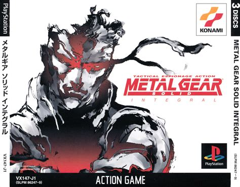
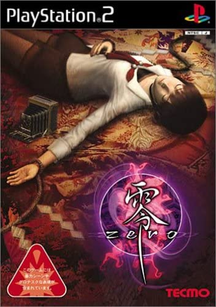
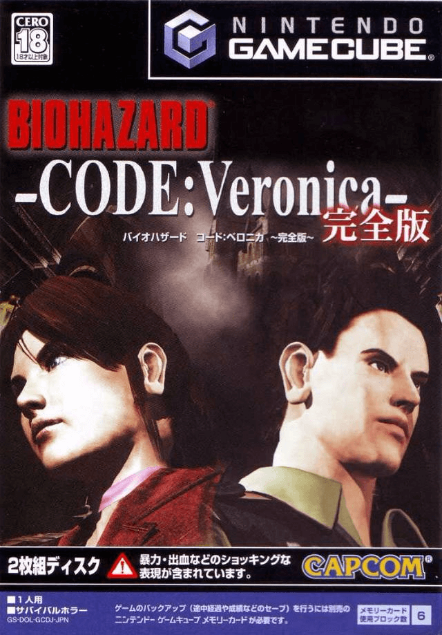
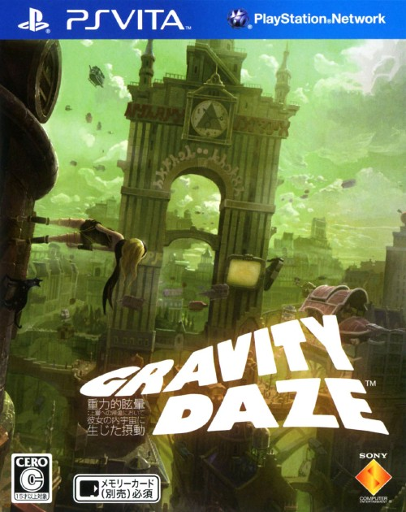
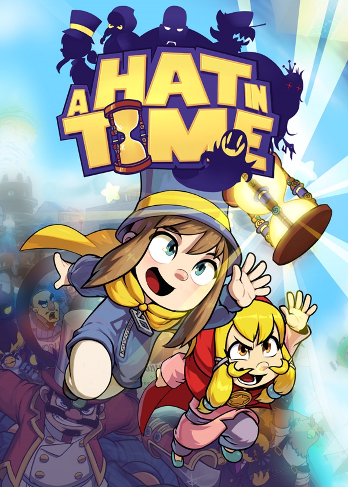
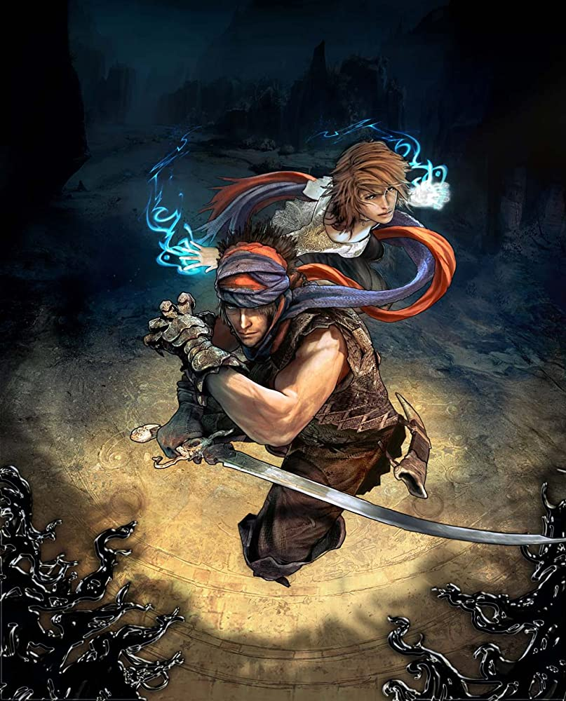
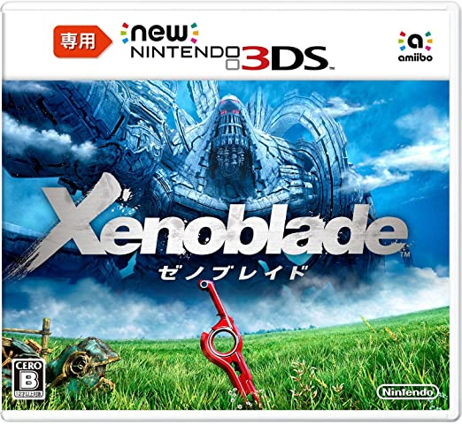
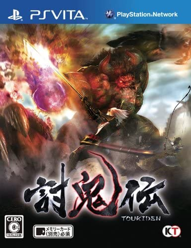

MEMORYLIST
VERSION 1.4
People don’t really just talk about video games anymore. Magazines are dead. Let’s Plays are dead. Streamers don’t really know anything about video games (they’ve only started gaming a few years ago, and chances are it’s been 1 or 2 games that entire time). Even if a random streamer actually knows something about video games, they seldom talk about… anything, really. Podcasts are mostly about news. Where would a new gamer learn about what’s good? From video essayers?
The ideal target of this list is somebody who’s just played all the obvious stuff — all the Destinies, Warframes, Path of Exiles, Skyrims, maybe a couple of Ass Creeds and CoDs — and now wonders “where to go now if I don’t feel like starting with retro?”. This list exists to answer precisely that: with a few exceptions of several PSone games I simply had to include, all the games in the list are perfectly modern in design and execution. If you want to be able to say or do anything meaningful about the current events of the industry, you cannot just sit and wait for new good games to come out — you need to know how good gaming used to be. Pretty much the main reason real shitty AAA games keep coming out is because people making them don’t really know any video games that are older than 5-10 years, and possibly don’t even have any interest in them at all. Most great games from the past are pretty unique too, so really it’s kind of a crime against yourself not to be familiar with them. There are no modern alternatives, no HD substitute for them.
Are you new to gaming and grinding at Warframe or Stardew Valley waiting for the next great thing to come out because there is nothing else to play? Well, if you look around you are guaranteed to find a few dozen of great titles you haven’t played: but you need to look thru time and platforms. Fuck Steam. Fuck PS4. We are going international. What I’m listing here are experiences you will literally never get if your just keep staring forward. Also, even if you do consider yourself pretty hardcore I hope maybe this list can help if you’re suffering from “there is nothing to play” problem. We’ve all been there: it’s not real, it’s merely a state of mind. Maybe this list can direct you out of it.
ARE YOU SURE MODERN-ISH GAMING DOESN’T START WITH PS3 AND X360? OR ALTERNATIVELY, WHY NOT TALK MORE ABOUT THE PSONE/N64 GENERATION, THEN?
Yes, I’m completely sure PS2 era game design is perfectly accessible to any human being who generally gets how modern games work.
And that is my justification for not going further back in time: in 2020 games are way too different from what they were 20 years ago, so I really think recommending Mario 64 to somebody how’s only played Destiny 2, Uncharted 4, and (obviously) Skyrim is a rather pointless endeavor. I only recommend games that haven’t aged much, or even at all.
As much as I tend to act as if it’s a black and white issue, I’ve got to admit that for the most part English localizations of Japanese games are not at all contaminated by something 100% unacceptable. Any localization is a process of fundamentally rewriting a work of art to make it relatable on the target market, essentially destroying half (if not more) of the original feel and vision: instead of what the original artist wanted to tell, you get what a committee of censors and (essentially) politicians think you should and/or are allowed to be exposed to. Most of the time they don’t even do a good job of it: have you ever heard about how Japanese video games tend to have bad dialogue and stories that don’t make much sense? Well, about 90% of it is due to how those are being rewritten and dubbed for you, my dear English speaker: shittily. However, having said all that. Although to me it is impossible to agree with non-inferiority of such products, I think it seldom crosses the line into the realm of “if you cannot play it in Japanese you shouldn’t play it all”. I don’t think that is fair to say about most Japanese games available in English. Yes, if you do speak the language, you absolutely owe it to yourself to experience Japanese content only in its original form. That would also be pretty much the best reason to learn the language. Think of it as a sacred language for gamers. Kinda like Latin for pedophiles. Yet, if you don’t speak Japanese, feel free to play the localizations, most of them should be… at least slightly better than nothing? Just don’t ever tell me a Japanese game I’ve recommended to you is bad/stupid. You don’t have that perk unlocked, I’m sorry.
Learn to deal with a simple fact: most games worth playing are console games. For the longest time PC absolutely sucked as a gaming platform, so most smart devs were avoiding it. It is only recently (PS4 generation) home consoles and PC became this pretty much same thing. Before X360 games were barely even playable on PC (including PC exclusives) with but a several exceptions of a few classic FPSs, RPGs, RTSs, and of course various (mostly performing at 15-20 FPS) MMOs.
First of all, if you plan on playing on PC as much as possible, get a controller. There are no ways around that: the decision has been made for you. Your options are:
・ DualShock 3 — get this one if you’re guaranteed that it’s in perfect condition or if it is dirt cheap
・ DualShock 4 — your next best option
・ WIRED Xbox360 Controller — you last good option
・ don’t ever buy the Xbox One Controller: it’s pure garbage. you’ve been warned
・ 2023 update: Dual Sense (PS5 controller) is fine but it's unreliable and overpriced, but Xbox "series" controller is actually not as terrible as the Xbone one, however I recommend getting either a slightly better clone by PowerA with back buttons or just something by 8bitDo instead
Second, you’re gonna need a PS3 and a PS4. At least eventually. So, maybe just get one of them right away and you’ll have yourself a controller automatically.
DS, 3DS, PSP, PSone and PS2 should be easily emulatable: you don’t even need to google it — it’s all on YouTube. Here is a shortcut to the PS2 emulation realm: pcsx2.net
I honestly don’t know if you can emulate PS Vita. Google will probably tell you that you can, but an existing emulator and an actually functioning one — are two absolutely different beasts that can be 30 years of development apart. You definitely don’t wanna emulate PS3 or PS4, don’t even think about it.
If you’re interested in handhelds (or rather, games for them), I recommend getting the actual hardware — you won’t be sorry, trust me. Handhelds are fucking awesome. If you’re planning on diving deep into Japanese gaming, you’ll get way more use out of a 3DS than PS Vita, but at the end of the day I recommend both. Both can be jailbroken and used to play emulators. But actually, I recommend starting with PSP, especially if you’re not 100% sure that Japanese handheld stuff is for you: PSP is cheap, it is so easy to jailbreak you probably won’t even be able to resist doing it, and there are tons of original and remastered content for it. Just get one game for it — Persona 3 Portable — and you’ll know what you wanna do next.
Also, now that there is an option, don’t buy 3DS LL — buy 2DS LL instead. The 2D Nintendo screens look way better than their 3D screens in 2D mode (you’re not gonna be using the 3D mode, trust me). 3DS screens working in 2D mode look very blurry (to the point of actually being pretty hard on the eyes: it makes you feel like you need glasses) and the colors are totally off.
So, to sum up, PS3 is a must, so is PS4. The rest can be emulated, with a possible exception of PS Vita. Don’t emulate handhelds tho, just get them. Start with PSP if you’re unsure. Avoid digital purchases: get a hard copy of everything that has it.
Because of the nightmarish amount of work it would take to get original footage or even screenshots for all these titles… I’m not gonna do it. I also don’t feel like stealing other people’s gameplay, and I don’t wanna use official trailers:
1) For some of these games trailers are not currently available on YouTube or may not have even existed there in the first place.
2) In some (mostly older) cases the trailers are not exactly uploaded to any kind of official channels, so I can only assume they will be taken down at some point.
3) For a lot of these titles trailers are not even particularly good or representative of the actual game — I don’t feel comfortable showing them to you as a way of saying “so this is totally the game I’m talking about”.
So for the written format I’ll just do box arts or whatever else feel appropriate, but I’m not gonna dig incredibly deep so please don’t accuse me of just taking stuff from image search because that’s literally what I’m gonna do.
If this ever gets a video form, I — at least at the moment — stand by my intention of not getting into acquiring video footage for all this games: either original or thru “stealing”. So, there will probably be either nothing or just some random gameplay on the screen. With games’ cover arts popping up and stuff. Also I’m obviously not including any of the music from the games because YouTube.
———
Persona 2: Tsumi & Persona 2: Batsu
You probably already know wtf is Persona. There are pretty much 2 types of Persona fans: the ones who’ve only played P4G on the Vita telling everybody it’s the best thing ever, and the ones that played all of them and can never shut up about the two P2 games. What can I tell you… I believe P3 (or to be exact, P3P) is the one to get if you’re not already comfortable with early 3D games. If you are — you definitely owe yourself some P2 experience. Definitely ignore Persona 4 Golden for as long as you can tho.
Both P2 games were ported to PSP, but I believe only one if them is available in English (?) Not like I’m recommending localized versions anyways tho. Play them at you own risk: I have no idea how bad the translation and/or censoring is in them.
IMO by far the best Shin Megami Tensei spinoff. By spinoff I mean it is literally a classic SMT game that is just not part of the main series story-wise. It is basically the game they based SMT4’s esthetics on: it kicks ass, it is so effin’ cool… Technically it is the second game in the Devil Summoner series (the first one being called just Devil Summoner), but to be honest I don’t think that one is a good place to wow yourself: it was VERY mediocre. Look for Strange Journey if you want more good SMT action that is not retro AF (it’s a DS game tho, and I have no idea how good or bad the “HD” version is on 3DS).
Soul Hackers is also available on Sega Saturn and 3DS. I recommend getting the latter one. The English version may be fine, may be cringe garbage — sorry, I don’t know.
Pretty much the best story-driven mech RPG that just happened to be hidden under an arcade fighter jet simulator. Great non-linear story, great music, great missions. You can only experience the “best RPG” part with the original Japanese version tho: literally the entirety of the story and 50% of the missions were cut out in the English version. Yep.
Metal Gear Solid

Why optional? Because probably too weird and "pixely" for most zoomies to appreciate or understand the appeal. If looks are not a problem—a must, but I wouldn't hold rejection against a zoomie who just finished Black Ops 83 campaign and asked me "what else is good?".
If you are one of those people who bought into the fad that ARPGs should offer infinite content, and things have been getting a tad boring for your last 3000 hours of Path of Exile (funny how the paid "content" "creators" never get bored), give this one a spin. You mind will be blown by an actual sense of progression and the need to pay attention to what is happening on the screen. Yes, we are talking about an ARPG. Those used be real video games. DevilutionX mod on PC. The PS1 version is fun too, and can be played in couch coop (pretty much exactly like the Champions and Baldurs ARPGs on PS2), and there is, for some reason, a random ultrawide patch for it by some random russian dude (you'll find it if you look for it). Don't bother with the expansion. Diablo 2 is PC only, so I don't know much about it. I think the crowd that goes crazy for it are the same people who put 6000 hours into Path of Exile, so I'm good. And you can only get it as the Remastered version on Battle.Net, because greed.
The best classic Biohazard game. If it’s too retro for you, maybe don’t bother. If you wanna see how it was at its best back in the day — this is the one to get.
If you ever plan of playing Silent Hill 3 — at least watch a let’s play of the first one.
———
Devil May Cry 3
(Devil May Cry 3: Bla-Bla’s Bla-Bla-Bla in English)
Basically the first real character action game. Also the best DMC game: best kickass setting, best kickass music, by far the best gameplay at the moment of release. Technically DMC4 has a slightly better combat system, but unfortunately the rest was never finished and can barely be considered a complete game. It goes without saying, but the series doesn’t exist beyond DMC4.
The PS2 version is basically the only way to go. The HD collection version is garbage: they couldn’t re-render half the cutscenes so just gave us cropped (to fill the screen) extremely low resolution versions of them. And obviously redrawing skyboxes/backgrounds was too much work for them so they just ended up using the originals — they look like absolute crap in HD. Also don’t try the original PC version — it’s unplayable.
biohazard 4
(Resident Evil 4)
The best non-classic Biohazard game by far. Nothing else comes even close. Revelations 2 is not bad at its best moments, but overall it is only passible. Biohazard RE:2 (the remake of B2) is pretty good but there is so little content in it you just cannot compare it to B4. B4 is huge. It’s dark, cheesy, and fun at the same time. It has borderline infinite replayability: kinda like DMC3, Bayonetta, or Demon’s and Dark Souls in that regard.
I recommend getting either the PS2 version, or the “HD” PC version and mod the game to imitate PS2 controls (you should also mod the analog sticks’ dead zone — it is way too gigantic on the PC “HD” version). No matter what you end up doing, don’t get the original PC version.
Depending on your personal preference, it is either the third, second, or the best 3D Legend of Zelda game of all time that is not an actual Zelda game. In my opinion, the latter. Tolerable in English.
Has a bunch of version: don’t know anything about the HD ones, but I assume they are fine. I don’t even want to talk about it. Just get it.
Has a spinoff on DS you should probably go for if you consider yourself a fan of the original, but don’t break your legs chasing it — not particularly worth it.
Stylish as all hell version of Biohazard with badassery cranked up to Tarantino levels. Great level design, great puzzles, great visuals, cheesy AF story, fantastic music. Give it a chance and it’ll blow your mind. As far as I know the English version is OK.
The PC version, while not offensive, is pretty useless nonetheless. The original GameCube or the PS2 versions are the way to go.
…is fantastic. It’s an open world action adventure with great gameplay, great story, great visual style and music, and extreme level of polish. Overall, just like Ōkami, it’s kinda like a 3D Zelda game.
There was a digital HD version for X360 and PS3 a while back but I don’t know if it was any good or if you can even get it these days. I don’t think the old PC version properly supports controller or even widescreen aspect ratio, but if it does — I’m sorry for talking shite about it, I just wouldn’t assume those things about an old PC version of a console game. Just get one of the original console versions: you won’t regret it.
Prince of Persia: Sands of Time
&
Prince of Persia: Warrior Within
One of a kind Sands of Time trilogy unfortunately has only two good games: the first one and the second. I can’t tell you which one is better because the games are completely different tonally, but on purely technical level Warrior Within is a much superior game: better graphics, better controls, better combat system. While different, both games are absolutely fantastic in terms of gameplay, level design, atmosphere, music, visual design. Definitely some of the best games of all time.
Similar to Beyond Good and Evil, the modern PoP trilogy had an “HD collection” type of situation going that was exclusive for PS3 and X360 and I honestly don’t know if it was any good — I’ve only played the HD version of WW… I think it was alright but I honestly don’t remember. And I don’t think the original PC versions had controller support. So just pick one of the original consoles these games were released for and start with Sands of Time.
Ryū ga Gotoku & Ryū ga Gotoku 2
(Yakuza and Yakuza 2)
Ryuu ga Gotoku is a criminal drama that has a healthy sense of humor and is very aware of itself being a video game. It’s kickass AF, it’s intentionally cheesy and properly serious at appropriate times, and it is honestly pretty immersive. The games are set in a relatively small but very detailed and realistic RPG-ish open worlds filled with optional stuff and have a very nice beat ’em up combat system. The characters are great, stories are interesting, and the overall experience is nothing short of exemplary for how video games don’t have to be gloomy to tell serious stories in realistic environments. A definite must play.
I should probably add that Ryuu ga Gotoku is often called a spiritual successor to Shenmue, but in practice I think it’s kinda stretching it. Ryuu ga Gotoku succeeded at all of the things Shenmue failed at. It is different in literally every way, and the only common thing between the franchises is that both feature photo realistic-ish open worlds with tons of optional bs. RgG owes everything to Shenmue? Gimme a break. Play the games. Realize how stupid the comparison is.
I think the first two games were once published as an HD “collection” for Wii U and PS3, but the release failed so miserably they stopped printing it after selling like 2000 copies over several months… or something like that. If you can find said HD collection tho, I’d go for it. I mean, it’s probably alright (and on top of that, it’s pretty rare). Or just get the PS2 versions. The third game on PS3 is also good. The rest of the series is pretty meh to be honest, especially 4, 5, and (surprisingly) the “Kiwami” remakes (why exactly do they suck so bad is a topic for another time). The spinoffs are fine, but don’t expect super much from them. 7 isn’t even a RgG game (it’s a Dragon Quest parody): avoid as long as you can.
IMO the best Persona game for most people and definitely the best version of P3 (there are 3). If you want to know what Persona is, get yourself a PSP and a copy of P3P. Fuck P4, P4G, and definitely fuck P5 — those games may be OK, but there is absolutely nothing great about them aside from marketing. You are free to have a different opinion, but do yourself a favor and play P3P before saying anything else about the franchise.
P3P is available on PSP and PS Vita (thru PSP emulation). I dunno if PS3 or PS4 can officially emulate PSP by the time you read it, but my guess is probably no.
Alas, there is one more actually story-driven Ace Combat game. It’s pretty great. This time it is about an actual semi-realistic war story that follows semi-realistic pilots of semi-realistic fighter jets. It’s all cheesy AF, but makes for damn good combination of story and gameplay. Missions are great, characters are great, music is fantastic: it is by far the best out of all the Ace Combat games made after 3. If you are even remotely interested in (arcade) flight sims, definitely give this one a spin. And also keep in mind that the only other good game in the series is AC3 on PSone and you need to know Japanese to enjoy it.
AC5 is only available on PS2.
I’d understand if you didn’t like it, but you really should give it a try. It’s kinda like a Zelda game with nothing but bosses and a wast, lonely, forgotten world they slumber in. The level design is fantastic, the visual style is epic AF, music is breathtaking, the story is… there. The gameplay is kinda janky tho, and the framerate of the original PS2 version was bordering on unplayable at times. Still, even tho you are free to not be a fan of SotC, playing it is pretty much mandatory if you want to be considered a person worth talking to about video games. ICO is kinda like that also.
SotC is available on PS2 and there is also supposed to be a really good HD remaster for PS3 (and maybe PS4?). You even get ICO with it — a game nobody has played but likes to pretend like they did on day one and it is the bestest thing ever (they didn’t and it isn’t).
A lot of people don’t get God Hand the same way they don’t DMC and Bayonetta: God Hand is a character action. Only instead of being a slasher where you basically have a fighting game control scheme, it’s a beat ‘em up with fixed over-the-shoulder camera (later God of War 4 stole this idea and sold its as one of a kind revolutionary camera solution for a melee combat-based game). It has a unique combat system (devs of Remember Me tried to steal it and failed miserably), great variety of content and replayability. The difficulty balance is just perfect. And yeah, it is also absolutely ridiculous and you can fuck right off you don’t think it’s glorious. Just like Killer7 or Bayonetta, God Hand is pretty much everything a video game should be: a battle cry of fun.
PS2 only afaik.
Tekken 5
(and just fighting games in general)
IMO the best 3D fighter on PS2. The gameplay is basically the best in the series: the only better game is Dark Resurrection, and that is literally just a reskin (for the WAY worse) of T5 with 2.5 new characters. T5 has the best overall esthetic and user experience, the best music, and (for most characters) one the least stupid stories in the series.
If you feel like checking out what a 3D fighting game could be, check Tekken 5 on PS2. Also check Virtua Fighter 5 (my personal fav of all time) on PS3 (maybe even PS4 now?) and Killer Instinct on Xbone (and also PC, but there is like 3 people in the world playing KI on PC at any given moment).
Zone of the Enders
&
Anubis: Zone of the Enders
Mostly the second one tho. It’s a total clusterfuck but at the same time it’s borderline the best fantasy mech game you can find. The English version is absolutely unbearable, so only get the original ones. Not the HD, nor the 4K remaster includes original voiceover for none-Japanese copies of the game, so avoid them.
The original versions are on PS2, and there is an HD remaster on PS3 and X360. They’ve also ported the remaster to PS4 and PC with 4K support and (wooooooooooooooooow) surround sound. Also it took me 3 minutes to google that the PC port is useless garbage.
You know GTA, I don’t have to tell what’s what. San Andreas is the best. Also check Vice City out, it’s pretty dope. GTA3 plays like garbage, but the overall esthetic of the game is very nice. GTA4 is borderline unplayable, but the story is fine I suppose? Also the second DLC for GTA4 is not half bad. GTA5 is donkey balls to the wall steaming pile of meaningless boring diarrhea.
Metal Gear Solid 3: Snake Eater
Really you should play the entire main trilogy (even the rest of the main series, not to mention the spinoffs, are nothing but cash grabs), but I know for a fact you won’t play the filthy MGS1 on PSone. And if you haven’t played MGS, there is literally zero point in playing MGS2. MGS3 on the other hand — yeah, sure. The game is 25 hours long and 50% of it is cutscenes. Have fun.
Extremely atmospheric, otherworldly open world adventure game. Essentially Ocarina of Time, but dark and evil. Outstanding music, very unique visual design, objectively the least plothole-y story out of all the Legacy of Kain games. Problems? Yes, quite a few. Combat bad, no ending (not joking), puzzles repetitive (there is pretty much one, and it get’s old quite some time before its last instance, believe me), technically exploring the world and 100%-ing the collectables is entirely pointless—all the magic does the same thing, so you might as well just get only one glyph (fire is best), but then you are pretty much immortal anyway... so why bother, right? Well, the game is so immersive it doesn't really ruin it. Altho definitely a good tell of how effort this dev team puts into thinking things thru. Could the game be a bit tangled and cryptic for somebody whose most open level design experience is Layers of Fear? Yes, but if you pay attention—you will be fine, I believe in you. Only play the Sega Dreamcast version, the EU one (it has a proper widescreen hack).
* Why isn’t the rest of the series recommended? Amy Hennig, I'm sorry, but the narrative of the LoK series is embarrassingly incompetent starting from SR2, and it is utterly not worth following, especially now that we know that it goes nowhere. You initially get into it because SR1 doesn’t have an ending, but all the series does from that point is collect five ignored questions for each one it fails to answer, and eventually ends, with about half a dozen unaddressed plot holes, each one pretty much completely nullifying the entire narrative of the franchise, or at least exposing the fact that the writers gave absolutely no frakks about the story they made autistically convoluted for absolutely no reason. Honestly, you DO NEED to pay attention to make sense of it… and that’s when you discover that it doesn’t… so you keep paying attention hoping it will all be worth it eventually… and it never is—it’s LOST all over again—it’s all a LIE) because in the end it is very obvious that all Amy wanted to do was a highly dramatic, Shakespearian, philosophical conflict between two gay lovers. Why the hell did you complicate the plot so much then, if you weren’t going to make it work? Jesus, Ms Hennig… You would expect someone attempting to write a story like that having maybe… I dunno... read Tolkien, perhaps? Understand the necessity for internal consistency and logic? It is beyond me why anyone would write something this convoluted, but not care to make it actually work. Ugh. So frustrating. Big potential. But yeah—long story short: the franchise definitely requires thinking to make sense of it, and as you start thinking, you will quickly start noticing that the more you do—the worse it gets. Complex, multilayered narratives are supposed to become better the more you think about them. Did SR1 need a sequel? Well, yes, but a better answer would be that SR1 needed an ending. The sequels that it got… Sorry, it’s absolutely ridiculous and unnecessary in scope, and utterly embarrassing as an attempt at an epic, convoluted saga. It was a mistake. If you love SR1, there is pretty much nothing I can do to stop you from playing SR2, especially since SR1 ends on one of the most shameless cliffhangers in the history of fiction. Just remember my advice, and try to pass it on once you learn it for yourself.
1) Soul Reaver is so atmosphere-based, the story pretty much doesn’t matter anyway, but even if I were to dissect it—there is hardly any of it, and therefore there is hardly any of Amy Hennig’s nonsense yet (it’s only foreshadowed). Except for the fact that the game literally does not have an ending, its story is pretty much hole-free.
2) Blood Omen 1’s combat is so terrible, you will honestly hate yourself for powering thru it. It’s a long-ass game, too. Its only value is 1 good music track (the default overworld theme) and the fundamental story to the franchise. However, that story is recapped in its ENTIRETY in Soul Reaver 2, and some of it is even rehashed again in Defiance. So… Yeah. Also, the story of BO1 has a giant, never-addressed plothole that ruins the point of the entire saga—Kain, by the end of the game, is literarily a nobody. He is not even of this timeline anymore, and he is DEFINITELY not the Guardian of Balance (his death would not have affected the Pillars in any way). What happened to the "proper" "new" Kain we pretty much have to assume ourselves—the only logical explanation is that he did all the same things as the original Kain before time traveling… and then just died somewhere without anyone noticing, and then the original Kain returned back to the present he just took his place and nobody noticed. Stupid, isn’t it? Yep, that’s what you have to believe in if you plan on investing into the plot of the series.
3) Soul Reaver 2: The Non-Ending to Soul Reaver 1 has an even worse combat, no otherworldly atmosphere, no mind-blowing music. Ridiculous amount of terribly written MGS-length cutscenes (this is the game that starts the bloated mess you may have heard of as "the great, deep, and complex story of the LoK series"). Also, the world map is just a linear hallways you run up-and-down three times (wow, much design). Oh, and this one also has a giant plot hole, but it ultimately doesn’t change anything—just a certain character saying the stupidest thing possible. The spirit realm is borderline laughable now, brilliant audio design is gone. A very weak game, but at least it is pretty short.
4) Blood Omen 2: Not Really is actually very good fun for about 50% of it, but then it gets INSANELY repetitive. Funnily enough, this game is pretty influential—quite a few games took elements from it, including PoP Warrior Within. Good music. Some of the art design is stupidly good. Story is… weird. It’s a fanfic. Has no connection to the rest of the series, takes place a weird, completely different, alternative universe Nosgoth roughly inspired by the events of BO1. It’s like an alt universe "what if" type of scenario. So… absolutely no reason to play it, honestly, unless you want to see it for yourself. Combat is OK, but it gets super overused in the second part of the games, levels are entirely linear, zero challenge. If you won’t, listen to the soundtrack, at least.
5) Legacy of Kain: Defiance of Logic and Consistency is the final game in the series. The best thing about it? It ends the franchise. A bit openly, but if you think about it for longer than 3 seconds, you will realize that the biggest problem in the narrative is now literally one fart away from being solved—so yeah, you might as well end the story now. Adding another game after Defiance would require it to mostly be a filler, and filler is exactly what Soul Reaver 2 and Defiance are already—I’m good on those, dunno about you. I, for one, would prefer for this story to stay dead... for the love of gods! Also, Vorador’s Mansion is pretty bitchin’. And, still runs at 60fps. Spirit world looks better, but still not as cool as SR1. Music is better than SR2, but still not SR1 level of composition, plus the genius sound direction of SR1 is still gone entirely, so while it’s a relatively positive side of the game, it is still frustrating. On that note, story is not even remotely as overbloated as SR2—cutscenes are relatively short, and dialogue is relatively straightforward. Problems? Ooph… Camera (ruins most of the immersion), level reuse (same vampire ruins every goddamn level… jfc I am having PTSD boredom flashes right now), combat is chaotic cringe (slow jenk was much better). The story has TWO giant plot holes. The game is long AF and the middle 50% are extremely repetitive and boring. Gets slightly interesting toward the end, when the story wakes the fuck up, but the payoff is hardly worth it. At this point, you are playing for the story. You are hoping it will actually go somewhere, finally. You are hoping this tangled mess will all be worth it in the end. Nope. Pretty much no questions answered, no plot holes covered. Oh, and the start screen menu of Defiance 100% inspired the one from Warrior Within. Overall: an improvement over SR2, but way too little and way too late.
* Speaking of which, why aren’t 3D Zelda games on MEMORYLIST? Because they (literally) run at 20fps—how can I recommend that to somebody who is just discovered gaming in the 2020’s? 3DS remasters? They have their own problems. The Ship of Harkinian mods weren't a thing when I was originally writing MEMORYLIST—if I ever try them and they blow me away, I will consider adding the OG 3D Zelda games. But even then—I have doubts… For somebody who has just discovered gaming… I dunno. Numerous things about those two games are insanely outdated. They are definitely something a passionate gaming enthusiast will eventually play, one way or the other, but I have doubts about using those to lure into real gaming somebody who just finished The Last of Us and… what else do you guys play? Ghost of Shushishi, as you call it? The big two 3D Zelda games are on the very edge on accessibility for someone like that, and I am erring on the side of the MEMORYLIST mission.
* Speaking of which, why isn’t A Link to the Past on MEMORYLIST? Pretty much same reason—yes, anyone who understands anything about video games would love it, but I expect exactly 0% of somebody whose first game was Days Gone to appreciate it without trying more, contemporary games first.
* Speaking of which, why not the Metroid games? Same reason why Castlevanias are not here. Neither of the Prime games, 2D Metroids, or post-Symphony Castlevanias are particularly accessible for somebody who was introduced to gaming by Fallout 4, and their favorite Far Cry is "the last one".
A cute attempt at making a Zelda-ish adventure game with light classic RPG elements.
HD remake is garbage. The original PC port is fine but it doesn’t have controller support and I think if you play it in 1080p the interface turns suuuper small (in other words, it doesn’t support modern resolutions). Maybe just get the original Xbox version if the game looks interesting to you. It’s pretty good.
Best open world Speedermale game. Pure joy.
Siren & Rei games

Pretty much the only real good horror games that are not Silent Hill 1, 2, or 3. Both franchises are unplayable in English.
Silent Hill 2 is pretty much the best game that’s gonna make you wanna kill yourself ever. Silent Hill 3 is a direct and really good sequel to SH1, so at least watch a playthru of 1 before starting 3.
The HD collection is literal poison: do whatever you want with it but don’t play it. The PC versions probably need to be modded to become playable, but afaik people give them a pass, especially in the light of the HD collection existing. I dunno, maybe just get the original PS2 versions.
SH4 is meh, the rest of the series is 100% pure natural garbage juice.
Best arcade racing fun ever and the most esthetically pleasing Burnout game. For what it’s worth Burnout Revenge is the second best. PS2.
Best none-classic NFS. PS2, PC.
The actual best game about street racing. PS2, Xbox.
Interesting Cthulhu mythos-inspired game for the GameCube.

A must if you’re into JRPGs. Or the Xeno series, obviously. PS2.
A must if you’re into SMT. If you just want a regular JRPGs experience — I dunno, maybe not so much. It could be a bit too dark for a classic JRPG fan, I think. PS2.
Devil Summoner: Kuzunoha Raidou duology
Neat games a tiny wee bit related to SMT. PS2.
Genji

Best Onimusha 3-like. Arguably better than both Onimusha 3 and 4, which I honestly don’t even know if I can recommend. PS2. Known in Englishes as Genji: Bla Bla Bla Bla-Bla-Bla.
A stupidly good strategy game. The first one I strongly recommend. I don’t know much about the rest.
other BIOHAZARD games

biohazard (the remake one) — remake of the original first game in the series. Pretty much the first and also best remake ever. Should you play it? If you’re interested in the series — definitely. If not — I dunno. Also this has an HD version that was ported over to literally everything. The PC version doesn’t have original VO — hard pass. Maybe if you were to register a Japanese Steam account you’d get the original VO? I dunno, maybe. Do I care enough to look into it when I can just buy a hard copy I will actually own? No.
biohazard 0 — meh. Looks nice. The rest has very little value. Also has an HD version that was ported all over everything. Again, no original VO in the PC version — hard pass.
BIOHAZARD CODE：Veronica — you may like it a lot, you may hate it. I recommend giving it a try only if you are already a fan of the series. The PS2 version has X in the title — don’t pay any attention to it, it’s the same game.
Psychonauts
Some people are absolutely crazy about it. I say it’s hit or miss. Maybe give it a try. PS2, Xbox.
Jak and Dexter series
Hit or miss. Look up and decide for yourself.
Ratchet and Clank series
Hit or miss. Look up and decide for yourself.
———
The best character action game ever made, which quite literally makes it the best game ever made. It’s not even debatable. Get the whatever version you can. Bayonetta 2 was developed for the Wii U at the same time as Bayonetta 1 was ported to it. Later both games were ported over to the Switch. No idea if the Switch versions are good. I do know you’d need a proper Switch controller to play Bayonetta on it tho, for sure. AND you would have to track down a copy of the proper edition of Bayonetta 1&2 for the Switch where both games are physical (normal version comes with just Bayo 2 on the card and a download code for Bayo 1 — what a joke considering that Bayo 2 isn’t even all that good… it is technically still a character action… but essentially tis a God of Bore game with Bayo 1’s animations). PC port is good — maybe get that one and call it a day. Or track down the old Will U version of Bayo 2 that comes with a free port of Bayo 1. Definitely do that before going for the semi-digital Switch version. Again, maybe start by just getting Bayo 1 for PC. Bayo 2, to be perfectly honest, is barely worth playing at all.
They made the second best character action combat system in history but unfortunately never finished literally the entire rest of the game. Worth checking out but unfortunately has very little to offer in terms of actual content to play.
Was released and re-released for everything ever, but still was never finished. Get whatever version you can but don’t expect much.
The best shooter ever, by the best developer ever. Get whatever version you can, preferably a new PC copy so that PlatinumGames receives your support. PC port is goooood.
Best action RPG ever. Fantastic level design and combat system, great story and visual direction, incredible sound and music. Literally infinite replayability.
PS3.
Dark Souls

Second best action RPG ever. Basically, it’s more of Demon’s Souls, just a tad not as polished. Also offers borderline infinite replayability, just like Demon’s. If you somehow find a way of getting it without the DLC — don’t, the DLC is fantastic. Dark Souls 2 and 3 simply don’t exist, forget about them. Unless you are a fan of Dark and Demon’s, in which case you will obviously play Dark 2 and 3… Let me make it easy for you to have at least a little bit of fun in those: for Dark 2 go full magic, for Dark 3 go long sword and play it like it’s Bloodborne (spam R1 to win).
PS3, X360, PC (needs to be pirated and modded). Stay away from the broken cash grab that is Dark Souls Remasterered.
Third best action RPG ever. They tried to remix the Souls’ combat system to make a character action out of it and actually landed somewhere not far. Was marketed as a spiritual successor to Demon’s Souls, so you can probably guess in what departments this game is strong: they essentially made it horror-themed and metal AF. Unfortunately the game is very linear and doesn’t offer nowhere close to DeS and DS1’s levels of replayability, but tbh it doesn’t really change the fact the Bloodborne is one of the most impressive games ever made and definitely the best game on PS4. The DLC is an absolute must, but there was a funny thing a few years ago — the base game was like $8, while the version with the DLC was almost $40. Also the unpatched vanilla game is very different: has horrible optimization but also a couple of interesting exploits. So, for additional replayability and historical curiosity, maybe get both versions. For real. Come on, it’s one the best games ever.
Oh yeah, it’s a PS4 exclusive.

Two best “exploratory” sandbox shooters ever made. Far Cry 3 is not only the best in the (main) series, it is also the only (main series) Far Cry game actually worth playing. It has by far the best sandbox, by far the best story and characters, and even has pretty alright music even tho the mixing is so bad I played 90% of the game without it (the important thing is to have it ON ’til the end of the intro). And it also has the best feeling of being weak and alone on an island, surrounded by enemies, slowly becoming stronger by exploring your surroundings. Also Far Cry 3 and Blood Dragon are the only games in the series that have actual enemy placement optimized for stealth — in the rest of the series stealth is just a carry-over mechanic: you can use it occasionally but you can never rely on it 100%, the games weren’t designed with it in mind. In Far Cry 3 tho it is basically a Rambo simulator: you can do a quiet thing, you can do a loud one, you can do it from a distance, you can do it close range. It’s great, nearly perfect even. Get it. And Blood Dragon is pretty much just as good. It’s very short tho, and that is definitely a bummer.
I’ve played pretty much all of the versions of both games: PS3, X360, and PC. All of them are great.
Pretty much one of a kind game. DXHR is an open world action RPG set in a cyberpunk universe, and it's an immersive sim as well. Incredible level design and gameplay, great music and overall atmosphere. Art design is… well, it’s cyberpunk. It’s great. The story is lacking in several stages, but one thing it’s not is uninteresting. The other problem would be almost complete lack of bosses (or at least proper ones). The game is definitely not perfect. In fact it is even sorta unfinished. But the positives are so strong and unique, negatives may as well not matter. The sequel is crap tho, don’t even bother trying it out.
If you have this option, don’t get the definitive edition of the game where the Missing Link DLC is part of the main campaign. It used to be a couple hour-long standalone story and should have stayed that way. In the definitive edition the game literally pauses itself mid-campaign and forces you to complete the Missing Link: it’s pretty good by itself but the way they did it in the definitive edition absolutely destroys the pacing.
You can also just start with the first game in the series, but I have no idea how it functions on modern PCs.
Don’t bother with Mankind Divided.
I’ve played it on PS3, X360, and PC. All of the versions were fine.
The best game by Arcane, and (one of) the best immersive sim(s) ever. Unfortunately, like with most imm sims, if you are playing with at least the tiniest bit of your brain turned on, it quickly gets mind-numbingly easy. Still, you pretty much won't find a better game in the genre... which is a tad depressing tbh, but I'd rather live in a universe with Dishonored as king, than in one where Bioshock is the closest thing we've got to an imm sim.
Why not Dishonored 2? Because it's not even remotely as well paced, directed, and designed. It's not a bad game—just a very weak sequel. Your first experience of it will be a massive disappointment. Later, you will likely return to it in search of more Dishonored goodness—and you will find it. Somewhat. It's a game for which you settle. You have to decide for yourself whether it barely squeezes into your personal favorites because of being an imm sim, or whether you give it a boot for being a lame sequel to D1. Oh, and that Cashgrab of the Asset Flip DLC? Don't even bother.
Why not Prey 2018? Dude, it's literally one of the most divisive AAA games of all time. It is SO difficult to get into it. Simply put: the game is SUPER lame. It is almost fascinating: absolutely impossible to explain, but trust me—it makes a terrible first impression. BUT! There is fun to be had, and it does eventually get MUCH better... but never really gets particularly un-lame. Definitely a unique game, but not really in a good way. Technically, a spiritual successor to System Shock... but not really, no. A game I would NEVER recommend to anyone I don't know personally as a huge fan of Deus Ex and/or Dishonored.
Why not the Bioshock games? Those are extremely subpar linear shooters who only saw success because of 2K and marketing. In that sense, tbh, Bioshock Infinite (the most hated game in the franchise, borderline a CoD game) is actually by far the best one. Neither Bioshock 1 nor Bioshock 2 are imm sims, RPGs, metroidvanias, or even open world in general—and both of them were originally sold and are still being shilled as ALL of those things. Games like that in the 2000's—we had coming out about a dozen every month. There was never anything special about them, and the whole "Bioshocks are imm sims metroidvanias" thing is a pure hoax. Feel free to play them—they are relatively solid, mediocre 6/10 first-person shooters—but not in the context of hunting for imm sims. Have fun getting the PC versions to run, btw (and Remasters aren't much better, on top of looking like crap).
Personally played it on PS3, X360, and PC. All of the versions were fine, but the PC version obviously runs much better and can be modded (FOV much?). Zero compatibility issues with modern OS and hardware.
Assassin’s Creed 2
&
Shadow of Mordor
You’ve definitely heard of the AssCreed series. Long story short, Ass 2 is the only really good one. Some of the other ones have their occasional moments, but the general experience with all of them is just unbearably bad. Ass 1 actually ain’t all that horrible, but it is blatantly unfinished. Ass 2 Brotherhood is kinda OK. Ass 2 Revelations is utter garbage. Ass 4 has a neat piraty sandbox, but it is firmly held hostage by literally the worst story missions in the history of Ubisoft sandbox cinematic universe: the result is quite simply unplayable.
Shadow of Mordor is technically a different game by a different developer, yet it is literally an AssCreed game, down to every single detail. Set in fucking Mordor of all places. It’s great. The second one is garbage tho.
I’ve played AssCreed games on PS3, X360, PS4, and PC. Pretty much all of them. Shadow of Mordor was also on PC. They all worked fine. Well, with a small exception of AssCreed Unity: it is still 20 FPS on PS4. No idea if there is a PC strong enough for you to experience that masterpiece, but definitely don’t get it on console even if it’s $5 — it borderline doesn’t work.
Gravity Daze

Gravity Daze is the best superhero sandbox game ever. Literally everything about GD is great: after playing it you will be laughing at people arguing over the pointless topic of “Prototype vs Infamous vs Speederman on PS4”. If you don’t enjoy GD1 above allof the aforementioned soulless wastes of time, there is something seriously wrong with you. The original game on the Vita is perfectly fine btw: feel free to go for it if you want some handheld experience. However, the PS4 version comes with all the DLC and 60fps. Gravity Daze 2 is a video game I suppose. I don’t recomend wasting your time tracking it down.
A GTA clone that is better than most GTA games. SR3 is a completely different game, kinda in a bad way, but it is definitely very fun. You can only play SR2 on consoles: the PC version is broken and literally doesn’t work. SR3 and 4 (which I cannot recommend much) are OK on all platforms, I assume.
A one-of-a-kind story-based game by ATLUS. Finally, it is pretty much everything modern ATLUS has ever wanted their games to be: all style and story, borderline no gameplay systems, essentially a 3D visual novel. The thing is tho, this one is absolutely fantastic. Catherine was released for PS3 and X360. The Troy Baker (aka English) version of the game is unbearable. Catherine has been recently ported to modern systems (and even Vita, of all places) as an extended edition — it completely misses the point of the original game. The original is fantastic, and it’s the only version I can recommend.
An outstanding parkour-themed first person platformer. Made by a talented EA’s hostage-developer DICE. Pretty much one-of-a-kind gameplay; one of the best soundtracks for anything ever; one of the best futuristic-ish settings ever. Such a shame the story was an afterthought: it is pretty much complete garbage. But somehow you can’t get mad at the game for it. After all, it is kind of a miracle DICE was allowed to make Mirror’s Edge at all.
PS3, X360, PC — all the versions are fine. Get one of them already!
The best game about open world exploration posing as a survival game about eating, drinking, and base building. Features a beautiful handcrafted open world; super addictive gameplay; amazing music; masterfully told story; magnificent Unity-powered graphics that are impossible to optimize; a bunch of hilarious bugs because it’s an indie game. Immersive AF. Get it.
Subnautica: Below Zero is kinda like Subnautica, only not very good.
The original Subnautica is quite honestly one of the best games ever. The PC version is the main one, it is even potato-proved to a certain extend (I originally played it on a 12-year-old gaming PC). The console versions are probably fine too, I dunno. I know PS4 Pro is 30fps tho. Maybe they patched it for PS5? No idea, sorry.
A very strong linear story-driven action by Remedy. There is not a lot of them left. Embrace the cheesiness, embrace Sam Lake’s cringy “genius” writing, embrace Sam Lake showing off his hipster musical tastes, embrace Sam Lake showing off how big of a literature nerd he is… and just enjoy a very simple, but interesting and beautiful ride. Facial animations are garbage, yes, but it’s not like making them better would’ve saved this game from being very deeply flawed — after all, Sam Lake wrote it. The biggest problem here obviously being that every game Sam Lake is involved with is pretty much just “What Sam is into These Days: The Game”. If you like the base game, definitely play the two-part DLC. The rest of the modern Remedy library, including the standalone DLC for Alan Wake (American Nightmare), are complete garbage. Check out Max Payne (1) tho.
Alan Wake is available on X360 and PC — both versions are fine (c’mon, it’s essentially the same system).
Shin Megami Tensei 4
(with optional SMT4: Final)
By far the coolest and bestest Megaten game ever conceptualized. Gameplay-wise it’s a bit on the easy side, but it you want challenge — you will find it there, I have faith in you. Great story, great music, fantastic art style. Badass AF. Not my personal favorite SMT game, but objectively I honestly think this one is the best. SMT4: Final is the sequel to it. Yeah, I know, it sounds like a GotY version of SMT4. It’s not.
3DS.
An outstanding adventure game. Pretty low-budget. Still, has very good graphics, story, and voice acting. Has a bit of an open world, even — and it is a good one. Is this game really all that fantastic? No, it’s not. But you won’t find another one like this (Ghost Trick is different, mmmkay?).
PC, PS3, X360, PS4, Xbone. I played the first two — worked fine.
Pretty much one of the best told stories, not even only in a video game. One of the best soundtracks ever. Gorgeous visuals. The gameplay is clunky but just start the game on Easy so that it doesn’t stand in the way and up the difficulty later when you become an undefinable god. The 2 DLCs are incredibly good: one is just reeeally good and the other is also huge AF (it honestly could’ve been a standalone DLC at that point).
Get any version you can (not the Switch one, obviously).
The Witcher 2 is also pretty good for a game of its time. Its default FOV is unplayably low and can only be changed by modding the PC version, so don’t get the X360 version if you ever decide to check it out.
An absolutely must-play, one of a kind adventure game. Less said about the better, trust me.
Wherever you can find it — get it.
The closest thing to Skyrim that doesn’t quite suck as much as Skyrim does. To go even further away from suckage, you can try Morrowind, but for most zoomies it may be too old.
By far the best thing ever to come out of the GTA4 industrial complex.
Essentially, this is a western-themed third person Far Cry game. The graphics are gorgeous, the story is solid, and the sandbox is one of the best ever.
I’ve only played the PS3 version, but I assume the X360 one is also fine.
Mass Effect
(don’t even bother with 2, 3, and Andromeda)

More or less the last truly great game by Bioware. Has to be the best sci-fi RPG ever, to be honest: I truly can’t think of anything quite as impactful off the top of my head. Good story, good music, very solid graphics… and even some actual role-playing opportunities.
I never played it on PC or X360, but I assume they are fine? Get it on whichever system is closer to you, I guess.
Double Dragon Neon
&
(Nekketsu Kōha Kunio-kun Gaiden) River City Girls
DDN is the best 2D beat ‘em up since forever (“forever” being the original Bare Knuckle, I’d say). And RCG is the best 2D beat ‘em up since DDN.
Everything about both of these is absolutely fantastic. You simply can’t find a better looking, sounding, and playing beat ‘em that these two. As far as I’m concerned they should be sold as a bundle.
The games are quite different tho. RCG has more or less unavoidable damage flying your way all the time while in DDN you can pretty much avoid taking damage completely. In fact, you probably won’t make it past the easiest difficulty if you don’t learn how to play smart. Should probably mention that in RCG there is borderline no difference between Normal and Hard modes (the only two ones) and New Game Plus provides no additional challenge (just some minor changes), while in DDN New Game Plus was ingeniously used to multiply tenfold the amount of time you can replay it (I played thru RCG 4 times just to max out all the characters — had to come up with stupid objectives for myself just because I reeeally didn’t want to put the game down — to tell the truth my last 2 playthrus were something most people could probably live without). Also RCG has way more character actiony- combat system in addition to a bit of an open world design. There is also a very strange situation with how RCG (wasn’t) localized. You see, technically it was developed in the USA by WayForward (yay!), probably just using art assets provided by Arc System Works (yay!), but clearly something was off in their communication. First of all, the game doesn’t have Japanese voice over, so even if you play in Japanese (ahem) the voices are in English. OK, weird but understandable. But then you notice that the text and the VO go absolutely different ways (forward) telling you absolutely different things at the same time by actual design. I mean, yes, stuff like this happens all the time when you play with English UI and Japanese VO but at least when that happens it’s your fault for combining those two thing. In RCG — it’s the only way. So, say for a Japanese person it only works if they literally don’t speak a word of English, otherwise they’ll be hearing one thing and reading another. Weird. Very jenky way (forward) to go about it. You know what would’ve been better? Sticking to the original script so that your only VO actually matches it. Did WayForward really not think about it? Probably not, because I bet my ass originally there was supposed to be Japanese VO as well as English, so WayForward probably went forward with writing their own localized version of the script really early own. By the time they learned that the English VO will be the VO it was already recorded and yeah — at that point they may have actually kinda forgotten that the English script was different from the original. If you don’t feel like learning Japanese just know this: there is no such thing as detention in Japanese schools and the ending is an absolute lie (there is a lot of kanji so use Google Translate image recognition function to at least get better feels from the ending).
Also don’t pay any attention to the fact that RCG is part of the Kunio-kun franchise — you really don’t want to play any of the other games in it. Kinda using reverse psychology here but at the same time not really. Proceed with caution.
DDN was originally released as a downloadable title for PS3 and X360, but apparently it was ported over to PC a few years later. Having played the original version to death I know absolutely nothing about the PC one, but I assume it’s fine?
The PC version of RCG was a tiny bit buggy for me (may be patched at the time of you reading this but I can’t guarantee it) but I also haven’t played any of the other ones so I can’t give you any recommendation on which is better… other than get physical (and preferably the one you can actually play, in which case possibly get whatever). I do suspect the none-PC versions may be pretty much bug free tho. Defs not the case for the PC one.
Oboro Muramasa
(Muramasa: The Demon Blade: The Game: The Localized Version With a Far Better Name)
Probably the best igovania (metroidvania with RPG elements) you can find. Absolutely stunning visuals, beautiful music, very interesting characters and a pretty unique story, and of course — a character action combat system. Need I say more?
Unless you absolutely have to find use for your Wii, get the Vita version along with the Genroku Legends DLC. Alternatively, of course, get both the Wii and Vita versions. I mean, why not?
You can also check out Dragon’s Crown by Vanillaware if you have a friend or 3 to play it with. If you don’t, I honestly don’t think the game is all that fantastic. It looks nice, yes, but the gameplay is so simple you’re gonna be bored out of your mind 2 hours into it, maybe even less. Odin Sphere (any version) — pretty much the same kind of “looks good but plays underwhelming” problem (no coop this time). These games are definitely not bad, but I just can’t really recommend them.
Short medroidvania disclaimer: yeah, I know. Symphony of the Night. Why the hell am I not recommending it, right? Honestly, I don’t think it aged all that well to be recommended to relatively new gamers. Mainly, the combat. I’m sorry, but the game plays like shit compared to something like Muramasa or Guacamelee, and this list is supposed to demonstrate what gaming can be and not just what is was back in our days. Speaking of…
The second best (after Muramasa) modern metroidvania. Solid platforming, good combat and graphics. Music is a bit unmemorable but it fits the setting perfectly. The story is essentially a one big joke, but kind of in a good way. Guacamelee 2 is almost just as good.
Exists on a bunch of platforms: I played on PC, but I assume all versions are playable.
By far the best Monster Hunter-like. Waaay better game than God Eater (not saying much), Toukiden (even tho it’s really good), Soul Sacrifice (even tho some people mistakingly love it to death), Dauntless (lol), and even most if not all Monster Hunter games.
PS Vita only.
A Hat In Time

A very solid collectathon platformer. Apart from the classics and what Nintendo puts out once in a generation, this is easily the best the genre has to offer. DLC is amazing, too. In fact, probably the best part of the entire game.
The PC version is fine, I dunno about the rest.
A very unique sandbox action game. Fantastic visual style, very good sandbox to explore, all in all pretty good story. The music is… well, it’s very good… But 99.9% of it is simply licensed rock and metal tracks, so… good job on the combined 1 minute of original ambient-ish music? To be fare tho, it’s a pretty good metaly ambient music. Oh yeah, the gameplay. It’s a bit… problematic. But I honestly don’t think it stops this game from being a must-try.
Any platform should do, I would think (I played on PS3).
The best modern Biohazard game after B4. This and Revelations 2 are also the only good Biohazard games since B4 (or since Lost in Nightmares DLC for B5 if you wanna stretch the definition of reality we occupy). Oh yeah if it’s not completely obvious from the name, it’s a remake of Biohazard 2.
All versions should be good (played on PC).
A really good — but unfortunately visually bland AF — 3D Zelda-like. Most people completely overlook it. Definitely has its badass moments tho. And the overall flow of the game, its open world… is pretty much perfect, I think. Darksiders 2 is so boring I literally started playing it like 5 times, and each time it took less and less time for me to tap out. Darksiders 3 doesn’t launch on my PC (another win for the mustard race) and I am too poor to rebuy a console. Remnant: Bla Bla Bla-Bla is actually really good (a souls-inspired shooter by the same dev. Double good in coop. Much recommend, but not an essential play by any means.
Played on PS3. No idea how good or bad the remastered version is.
Prince of Persia 2008

A very interesting metroidvania-ish, 3D Zelda-ish platformer, with a very fun collectathon element. Gorgeous graphics, beautiful music, OK enough 1 character-driven story. The only problem — it is suuuper easy. To the point where you pretty much literally can’t lose/die.
Can only recommend in on consoles, the PC version was fucked for me (YMMV).
What survival games used to be before your steam early access slop. Short, sweet, and unique. Why optional? Because I don't know if it even works there days.
One of the first digital-only titles, so I'm not sure how you would get this on anything but PC. X360/PS3 emulators are technically an option, but since it's a 7th gen game, you might as well start by trying to make it work on PC. Even if it's broken, it is possible that the community fixed it. Anyway, it will most likely be a bit of a mess to either get or to run.
For its time it was incredibly meh, but in retrospect it is actually pretty enjoyable and in fact the best Biohazard game we got between B4 and RE:2. Has no real connection to Revelations 1 for the 3DS (later ported to everything) apart from both being Biohazard games. Revelations 1 is not horrible, but in reality the most interesting thing about is the graphical fidelity they were able to achieve on the 3DS. Also it kinda plays best on the 3DS because various gameplay features were designed for it. On any other platform Rev1 is painfully mediocre at best and janky mess at worst — can’t recommend.
Played on PS4 and PC. All good. Also on the Vita. Can’t say anything about it. Should be good.
Garbage story, fantastic visuals. The gameplay is actually really good, but it takes a long time for it to get there. Because this game has RPG-ish leveling (your level carries between difficulty modes), you need to finish the game once on “normal” to unlock at least half the moves (you literally start with nothing). “Hard” and up will be borderline unplayable at the start because of that. After you have unlocked more moves and upgraded your health and damage output, the game suddenly becomes a very fun melee combat-based action. Oh, and the sexual harassment mini-games are so stupid I haven’t finished one. So yeah, they are completely optional.
Played on PC. The console versions should be fine too, I suppose.
A very good RPG-y open world first person shooter. Structured pretty much exactly like a Deus Ex game. Sorta one-of-a-kind in terms of story and atmosphere. The Darkness 2 is garbage.
PS3 and X360.
Oh boy. OK, here we go.
NieR Automata is a story-driven open world slasher made by PlatinumGames. The world is absolutely beautiful, and so is the music. The story, while having gigantic pacing and structure issues, is very interesting and hard to put down. Unfortunately:
The core gameplay is very simplistic: it’s not a character action, but a God of War clone. It gets old fast, and is not even that good in the first place.
The movement is way too smoothed, to the point of a very noticeable input lag. Doesn’t feel good at all. Very unlike Platinum to do something like that.
99% of side-missions are boring AF fetch quests you’re going to hate yourself for doing every time you decide to give one a try.
The story is extremely (almost Kojima levels) up its own arse on very annoying surface-level pretend-philosophical issues, which at one point pretty much completely took me out of it forever. To top it off, the story borderline makes absolutely no sense if you allow yourself to think about it even a little bit.
When put up against garbage like DMC5, it’s an absolute masterpiece. On its own, it is still a very interesting game… but it is also very deeply flawed (by, ironically, attempting to be deep).
In case you don’t know, Fallout New Vegas is a cult. And I’m not in it. But this is what I’m gonna tell you: unlike Fallout 3, New Vegas is actually a really good RPG. However, just like Fallout 3, just like Oblivion and Morrowind before it — it’s janky AF and it plays like garbage. Yes, the rest of the game is good. But no, unless I know you and your tastes, I’m not gonna recommend New Vegas to you.
Console versions are unplayable due to 2 hour-long loading screens.
Xenoblade

A really good JRPG. Oh and yeah technically it is part of the Xeno universe.
XenobladeX is kind of an underrated gem in my opinion — I love it — but it is also a bit of a clusterfuck (and not in a good way). It is also a Wii U exclusive. Good luck.
Xenoblade 2 looks interesting but I haven’t played it: it’s a Switch exclusive. Good luck.
Red Seeds Profile
(Deadly Premonition)
Just keep this game in mind. I’m not gonna recommend it to somebody who’s just starting out with video games… In short, RSP is a PS2 game that had to be released on X360. Was later ported to PS3 and PC. It is so jenky there is no point describing it; it looks like shite; sound design and mixing is horrible. But fuck me if the story and core game design are not absolutely brilliant. Just to be clear: this is not “so bad it’s good” situation. This is something truly different: this game is very good and very bad at the same time. Needless to say, I love it. Nowadays RSP is pretty much used as a “true gamer” test: if you don’t get it, and you cannot either ignore or adore its shorcomings, it pretty much says that you don’t understand (yet) what makes a good video game.
Alone in the Dark 2008
(aka Alone in the Dark: Inferno)
A gigantically (and often hilariously) flawed game, but simultaneously: (1) overall a massively underappreciated for its uniqueness experience, and (2) pretty much fatally ahead of its time (late 2000's were the era of EXTREMELY high-quality games, so Alone 2008 was majorly dismissed by the community without giving too much thought to what the game honestly and with a metric ton of love TRIED to achieve). It's an open world survival horror adventure game. Think Alan Wake + Uncharted. Know many games like this? Yep, exactly. (don't even think about throwing PsychoBreak 2 at me—not gonna work) Also, this was the first game to do the whole "pretending to be an episodic TV series" thing about two years before Alan Wake, which is pretty much never mentioned. Given that until about 2007-2008 Alan Wake was stuck in development hell and was eventually entirely re-structured/re-directed—that obviously would have to start happening around 2008, so Remedy was obviously inspired by Alone 2008/Inferno to do the TV show gimmick. Other things to note: amazing graphics, mega-underrated and unique soundtrack... and literally no ending. Some set pieces are really bad, but again—this is essentially Alan Wake, but actually survival horror (instead of horror shooter) and with actually insane adventure elements instead of just running on foot in the same woods the entire game. Just like Red Seeds Profile—this game is very flawed, but it is massively over-hated for problems that mostly aren't even all that bad (if you think they are—you haven't played enough games, dude, I promise you it's fine), and what it offers you won't find anywhere else. Long story short: an absolute must-play if you are an Alan Wake fan—don't listen to grifters crying about how broken this game is. Yeah, it kinda is, but, again just like with Red Seeds Profile, you guys are missing the lush forest for the few thorny bushes around its edges. Regarding that, I played the PS3 version (the one that got the subtitle "Inferno"), and from what I heard, that version is both less buggy and improved in terms of quality-of-life. Could it be that the non-Inferno version was virtually unplayable? I dunno guys—Inferno is pretty jenky, too. I think you might as well embrace it, since the PS3 Inferno both looks much worse and obviously runs at 30 FPS (on a good day). So, I am not sure which version to recommend. If the PC version is compatible with modern hardware/OS (and maybe even moddable into a smoother experience), obviously go for it—to my knowledge content-wise Inferno doesn't have anything over the original release, and the subtitle was just given to the PS3 port (it came out half a year later) to market it as an improved version because of how much the vanilla one was scolded.
Despite being a bit underwhelming (just like the original Alice tbh) this is a very good 3D platformer. If you like the genre, you definitely cannot afford skipping this one.
Originally played on PS3: worked fine. About a year ago I tried the PC version and for no good reason it ran at 15-20 FPS.
If you see it somewhere and it’s cheap — get it without thinking. It’s fun as hell.
In my opinion GRID is the last arcade racing game that tried to make you feel like a real racing driver. Meaning, it’s kind of like a serious racing simulator, but you can actually play it with a controller (which you cannot do with Gran Turismo, for example). And chances are, if you’re not a huge racing fan a controller is probably all you’ve got. So for people like me GRID was freaking brilliant. I also just really like the atmosphere of the game: it is a very cozy and nice place to be in.
The original DIRT was also very good for almost all the same reasons… if you liked rally racing, I mean. DIRT 2 was a huge step forward graphically, but it was also a huge step sideways into some grade A bs that ended up killing not only the series but pretty much the entire semi-arcady racing genre. Thanks.
the rest of the Ryuu ga Gotoku series
Honestly tho, any Ryuu ga Gotoku game is better than most other games on the same platform. It’s just that, in my opinion, there is a bit of a “played one—played all” situation going here. Judged by themselves tho, all of them are pretty good. So, if you keep enjoying them—definitely keep playing new ones, none of them are bad games by any definition (except for 7, but even 7 isn’t technically a bad game). I recommend ignoring the Kiwami games for as long as you physically can. Also, if you’re really enjoying the formula, check out Akiba’s Trip 2 🙂 And don’t forget the “official” spinoffs: Hokuto ga Gotoku and Judge Eyes. RgG 7 is a burning pile of sleep-inducing turn-based JRPG mediocrity: I barely managed to finish it and can think of a hundred JRPGs a hundred times better than RgG 7 (if you wanna start from the bottom, released the same year Final Fantasy 7 “Remake” comes to mind).
A pretty unique Monster Hunter clone. Some people like it a lot, you might too. I think it’s OK. The original version may actually be better than Delta (GotY version). Delta has way too much crap in it — if you haven’t played the original, you’ll get lost in it.
Toukiden 2

This may very well be the first open world Monster Hunter clone. Maybe even the only one to this day? Nevertheless, on top of that… Toukiden 2 is a very nice hunting game, and despite looking quite a bit generic on the setting side, it is also strangely unique at the same time — if you really think about it, there is not a lot of games out there that looks like Toukiden. I confidently recommend it to all fans of the genre. The first game was also pretty solid (not open world tho).
Only played the first two games. Exceptionally good story-driven visual novel-y adventure games. Start with 999.
Gyakuten Saiban series
(in English these game are randomly called “something-something” with words “Ace Attorney” and/or “Phoenix Wright”. I can’t find unifying logic, so I can’t relate to the Western gamers’ experiences with the games, and I also can’t understand which game is which on the West)
Exceptionally good visual novelly adventure games. Played almost all of them. Some are better then others (obviously), but even the worse ones are faaar from the point where I would be recommending wasting your time on researching which games to play and which to avoid. Think of them as a book series. Relax. Start with the first one. I dunno what is happening in the localized versions of these games. Looks like a complete clusterfuck. If some of them are truly terrible — skip and return to them when you can read Japanese.
Sekaiju no Meikyū series
(Etrian Odyssey)
Pretty much the best dungeon crawling JRPG series.
Fire Emblem is pretty much the best strategy JRPG series. Recommending Kakusei (Awakening) because it’s the last one I’ve played. It is hella good. If you ever feel like doing some Fire Emblem, you can probably just pick whichever is closest to you, to be honest.
PQ is literally P3 and P4 casts meet in hyperspace in-between their respective universes to play Sekaiju no Meikyū together (ahem, even tho P3 and P4 are canonically in the same universe, ahem). It’s a totally meaningless fan service game, but it’s not ashamed of it and neither should be you for playing it. Which you inevitably will.
Monster Hunter 4
(or 4G)
There is no better game to check out what Monster Hunter used to be before the age of darkness and realism. Both 4 and 4G, along with the X games, should be borderline free at this point.
Hatsune Miku: Project Diva F
or possibly X. definitely not F 2ND
Vocaloid community was one of the most creative things to happen in independent music ever. Did you sleep on it? Well, a Project Diva game is kind of like your personal guide to the phenomenon. You’re gonna need one, trust me.
Tobidase Doubutsu no Mori
(Animal Crossing: New Leaf)
A complete time waister, but sometimes it’s all you need. Pretty good for language learners. There may even be a newer version at the time of your reading this.
edit: there totally is. It’s called Atsumare and looks pretty dope.
A really interesting visual novel that pretends to be an adventure game (it’s really not). I honestly don’t find the rest of the series good, but it’s doing it for a lot of people — it may do it for you. Definitely start with the first one tho. It’s really good.
Ghost Trick

A really cool and unique adventure game I’ve literally spent forever to find a black box version of. May not be for everyone, but fuck those people.
A really good Uncharted game about being sad. Jokes aside: the gameplay is good, the story is good, the graphics are… well, gray but good, I guess. Play on the hardest available difficulty or you will indeed experience just a sad Uncharted game.
The best Uncharted game. For starters, it’s an actual game. I even played thru it, like, 4 times or something, maybe even 5. Don’t even bother with the rest of the series. U2 has horrible pacing: it can barely be classified as a game and I almost died of boredom a few times while playing it. Zero replayability because of that. U3 is garbage: it was literally put together out of rejected and cut content for U2. Golden Abyss is a literal nothing. It’s better than 3 and 2 but that’s not saying much. U4 was only good for memes because of how useless and unwanted it was. There was also some standalone DLC for U4 or something like that, but I don’t think anyone has actually played it, therefore I don’t even know its name and no, I am not googling it.
Exceptionally good strategy game with sequels on PSP (of all places) and PS4. Avoid the spinoff(s). English localization is pure poison. Please learn Japanese before playing. Good luck.
If you want to play a space sim, this is the one to get. It is super boring, the space is mostly empty, and it takes a million years to do anything or get anywhere. I love it. For me personally, the biggest problem of the game is that you need to commit to what a given ship is gonna be doing: combat, delivery, mining, or long-range exploration. You pretty much cannot combine these area in one build at all else you end up with a potato that can’t do anything. So, if you wanna get into high-level combat — forget exploration. If you wanna explore — pretty much forget combat entirely (if fact, you should probably uninstall shields and weapons). Good luck talking yourself into doing that.
Don’t even bother with No Man’s Sky — there is absolutely nothing to do there, you’ll drop it after 30 hours with a better weapon, a better suit, and a larger ship. What next? Nothing. What a game! Also the devs are one of those people who don’t know the difference between a black hole and a wormhole. I don’t talk to those people about space, let alone play their video games about it.
Star Citizen, as you probably know, is not a game. But if one day it is…
Call of Duty 1, 2, and Black Ops
I honestly think these ones are pretty good. The rest of the series I find complete garbage. Explore at your own risk. But I don’t recommend it.
—————
There are other OK-to-good games coming, but since my backlog is effectively infinite at this point I am honestly not even keeping an eye on what is happening with a lot of on-going franchises I love. If you wanna talk trash, ask a question or two, or maybe just talk games in general (i.e. not necessarily the best of the best), you can always contact me on wherever you can find me.
P.S. It’s late 2022 right now and Returnal is still the only game worth wasting your moneys on PS5 for. Edit (2025): nope, forget it. It falls apart in the second half (but it really does at the end of the first one, when you notice that the game is actually brain-dead easy), and what might quite possible be the worst sci-fi story I have ever experienced (it is Silent Hill: Shattered Memories. literally the same story. you are welcome) drives such a nail into the Returnal's coffin, I now even struggle to justify getting into it in the first place. Gameplay-wise the game is still interesting, but mind-numbingly easy. Art style is impressive, but it peaks in the first biome. Technically, one the most unique games of the last 20 years. But what a cringe it is. Welcome to the cinematic SonySlop(TM) family, Returnal.
P.P.S. 2023: nothing changed. Except that Steam Deck (aka GabeGear) is now at the same time the best console money can buy, the best handheld money can buy, and the most affordable gaming PC you can find. To buy a modern console in 2023 you must be a complete lunatic, unless you are getting Series S for easy 120FPS in Warzone and Apex.